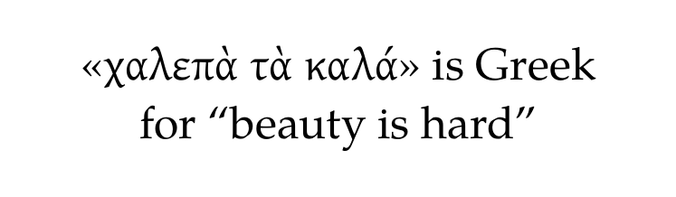
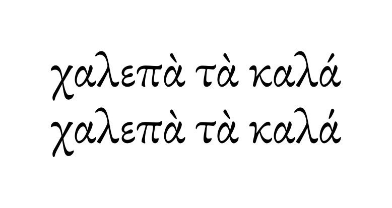
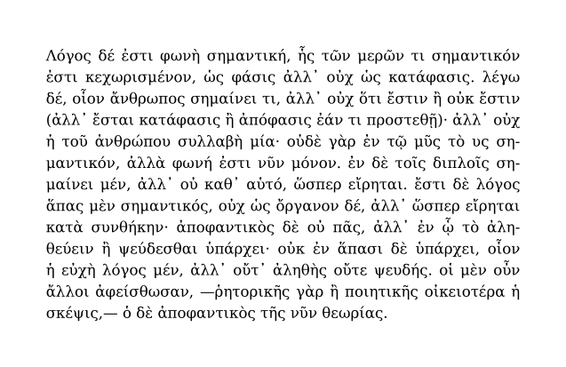
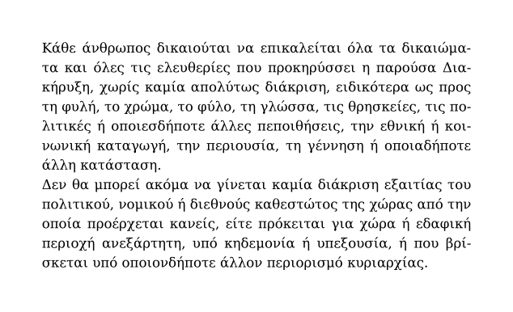
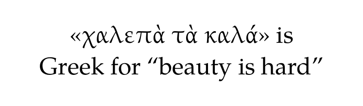

| TODO: Please add fonts that contain polytonic Greek to the last section! (See: To-Do List) |
Contents
Introduction
Historically, the development of Greek language can be divided in:
-
Ancient and Medieval Greek (–1453): language identifier is
grc. -
Modern Greek (1453–): language identifiers are
ell,ellorgre
This is different from the main two ways of writing Greek:
- Monotonic (or single–accented): diacritical marks are only the acute accent (or simply the accent) and the diairesis.
- Polytonic (or multiple–accented): diacritical marks are three accents (acute, grave and circumflex) and two breathings (rough and smooth).
After a long development,[1] monotonic orthography became law in 1982.[2] Greek was polytonic before and ancient Greek is polytonic because it was before 1982.[3] This means that polytonic Greek is not only ancient Greek, since the main part of modern Greek was polytonic.
Sample
Here is a minimal sample to start with:
-
\setuplanguage[en][patterns={en, agr}] \definefallbackfamily [mainface] [rm] [Gentium] [preset=range:greek, force=yes] \definefontfamily [mainface] [rm] [TeX Gyre Pagella] \definebodyfontenvironment[24pt] \setupbodyfont[mainface, 24pt] \starttext \startTEXpage[pagestate=start, offset=1em, width=15em, align=middle] «χαλεπὰ τὰ καλά» is Greek for “beauty is hard” \stopTEXpage \stoptext
- 
\definebodyfontenvironment[24pt] is only required to display the font in the wiki. You may not pay attention to it.
As it happens with texts with mixed scripts, the font family used for the Latin script may be well missing the required glyphs for the Greek script.
\definefallbackfamily provides a fallback typeface for certain scripts (or even characters).
-
It requires a range of characters for the fallback (here as a preset, that equals to
range:greek[4] ). -
force=yeswould be required to avoid mixing some glyphs that the main typeface might have (such asμ,νorπin Greek) and the rest of the glyphs from the fallback font. [5]
Mixed Hyphenation Patterns
As you might have already noticed, \setuplanguage is loading for US English (the default language in TeX) patterns for both US English and ancient Greek.
There are some considerations in how this works:
- Basically, each language has a different script, so mixing patterns has no problem. Each script is handled only by a set of hyphenation patterns.
-
Other hyphenation patterns might be added (as
ukfor Ukranian) [6] , since Cyrillic is a different script from Latin and Greek (and it is only used to hyphenate a single language). - This avoids marking the Greek fragments in the text with its proper language.
- This doesn’t work when having mixed ancient Greek and contemporary Greek fragments (because two different hyphenation patterns would be needed for the same script).
- All other options determined by \setuplanguage will be the ones from the main language, not the ones for Greek (in this case. Among others, these affect to the minimum number of characters to hyphenate a word (at the end of the line and at the beginning of the new line).
- This approach only applies proper hyphenation patterns to Greek. In order to have all other options related to the language, marking with \agr (or \gr in the case of contemporary Greek) is required.
With this sample in mind, there are other considerations that may help when dealing with Greek in computers (and with ConTeXt).
Unicode
Monotonic Greek needs the characters from the “Greek and Coptic” Unicode block (only the Greek part of it, not the Coptic part).
Polytonic Greek also needs the characters from the “Greek Extended” Unicode block.
All you need is to choose the proper font that contains the characters you require.
Just in case you wonder, there are much more fonts that contain glyphs for monotonic Greek that for polytonic Greek.
Monotonic and Acute Accent
Although the monotonic accent was acute, Unicode defines a pair of characters for monotonic accented vowels and polytonic acute accented vowels (both uppercase and lowercase and with diairesis).
These are the different characters in lowercase:
ά έ ή ί ΐ ό ύ ΰ ώ ά έ ή ί ΐ ό ύ ΰ ώ
In theory, both characters should have the same glyphs (they should be exactly the same strokes). In practice, this is not always the case, since the monotonic accent has been drawn as (almost) a vertical stroke.
The acute accent should mirror the grave accent (it is mainly its horizontal flip). Although acute accented vowels in polytonic Greek could be taken from the Greek and Coptic Unicode block, acute–accented vowels from the polytonic block may be required (because of the mismatch between the monotonic accent and the grave accent).
The following source displays the differences for each character with both accents (uppercase and lowercase characters):[7]
-
\definefontfamily[mainface][rm][EBGaramond] \setupbodyfont[mainface, 60pt] \definecolor [tred] [r=1,t=.5,a=1] \definecolor [tblue] [b=1,t=.25,a=1] \unexpanded\def\tonosoxia[#1][#2] {\dontleavehmode \startoverlay {\color[tred]{#1}} {\color[tblue]{#2}} \stopoverlay \ } \starttext \startTEXpage[width=7.5em, align=center, offset=1ex] \tonosoxia[Ά][\utfchar{0x1fbb}] \tonosoxia[Έ][\utfchar{0x1fc9}] \tonosoxia[Ή][\utfchar{0x1fcb}] \tonosoxia[Ί][\utfchar{0x1fdb}] \tonosoxia[Ό][\utfchar{0x1ff9}] \tonosoxia[Ύ][\utfchar{0x1feb}] \tonosoxia[Ώ][\utfchar{0x1ffb}] \tonosoxia[ά][\utfchar{0x1f71}] \tonosoxia[έ][\utfchar{0x1f73}] \tonosoxia[ή][\utfchar{0x1f75}] \tonosoxia[ί][\utfchar{0x1f77}] \tonosoxia[ΐ][\utfchar{0x1fd3}] \tonosoxia[ό][\utfchar{0x1f79}] \tonosoxia[ύ][\utfchar{0x1f7b}] \tonosoxia[ΰ][\utfchar{0x1fe3}] \tonosoxia[ώ][\utfchar{0x1f7d}] \stopTEXpage \stoptext
-

Depending on your operative system and your keyboard layout for polytonic Greek, it might be that it composes the acute with the monotonic accent (as it seems to happen in Linux).
A workaround to avoid this would be the following:
-
\startluacode fonts.handlers.otf.addfeature { name = "tonosoxia", type = "substitution", data = { Alphatonos = utf.char(0x1fbb), Epsilontonos = utf.char(0x1fc9), Etatonos = utf.char(0x1fcb), Iotatonos = utf.char(0x1fdb), Omicrontonos = utf.char(0x1ff9), Omegatonos = utf.char(0x1ffb), Upsilontonos = utf.char(0x1feb), alphatonos = utf.char(0x1f71), epsilontonos = utf.char(0x1f73), etatonos = utf.char(0x1f75), iotatonos = utf.char(0x1f77), iotadieresistonos = utf.char(0x1fd3), omicrontonos = utf.char(0x1f79), omegatonos = utf.char(0x1f7d), upsilontonos = utf.char(0x1f7b), upsilondieresistonos = utf.char(0x1fe3), }, } \stopluacode \definefontfeature[tonosoxia][tonosoxia=yes] \definefontfamily [mainface] [rm] [EBGaramond] [features={default, tonosoxia}] \setupbodyfont[mainface, 48pt] \startTEXpage[offset=1em] χαλεπὰ τὰ καλά\\ \feature[-][tonosoxia] χαλεπὰ τὰ καλά\\ \stopTEXpage
- 
The sample above should display the difference between the more straight monotonic accent on the second line, and the proper acute accent.
On “Character Normalization”
Depending on your search, it might be that searching for u, results might include ú ů, ü or any character composed from u and any diacritical mark. Depending on the language, these “normalizations” may belong to the same letter or not (for example, u and ü are the same letter in Spanish, but two different ones in German).
This doesn’t only affects to letters: , and ‚ are the characters for the comma and the opening single–quotation mark (used in some languages, such as German), respectively. At least, Firefox only displays the occurrences for each character when the option to match diacritics is selected (otherwise, each character displays both occurrences for commas and these opening single–quotation marks).
At least in Linux (using Firefox), the option to match diacritics doesn’t distinguish between monotonic and acute accented vowels. In other operative systems and using other programs, results might differ.
The wiki itself seems to suffer from this “normalization” and this is why samples do not work here (and cannot be copied to work locally). A workaround would be to use \utfchar (such as in the first case of \tonosoxia).[8]
Ancient Greek
\agr or \ancientgreek are the values for ancient Greek hyphenation patterns.
A minimal sample would read:
-
\mainlanguage[agr] \setupbodyfont[dejavu] \startTEXpage[offset=3em] \input aristotle-grc \stopTEXpage
- 
Monotonic Greek
Either as \mainlanguage or \language, right values are gr or greek.
A minimal sample would read:
-
\mainlanguage[gr] \setupbodyfont[dejavu] \startTEXpage[offset=3em] Κάθε άνθρωπος δικαιούται να επικαλείται όλα τα δικαιώματα και όλες τις ελευθερίες που προκηρύσσει η παρούσα Διακήρυξη, χωρίς καμία απολύτως διάκριση, ειδικότερα ως προς τη φυλή, το χρώμα, το φύλο, τη γλώσσα, τις θρησκείες, τις πολιτικές ή οποιεσδήποτε άλλες πεποιθήσεις, την εθνική ή κοινωνική καταγωγή, την περιουσία, τη γέννηση ή οποιαδήποτε άλλη κατάσταση. Δεν θα μπορεί ακόμα να γίνεται καμία διάκριση εξαιτίας του πολιτικού, νομικού ή διεθνούς καθεστώτος της χώρας από την οποία προέρχεται κανείς, είτε πρόκειται για χώρα ή εδαφική περιοχή ανεξάρτητη, υπό κηδεμονία ή υπεξουσία, ή που βρίσκεται υπό οποιονδήποτε άλλον περιορισμό κυριαρχίας. \stopTEXpage
- 
Modern Polytonic Greek?
Before 1982, Greek orthography was mainly polytonic. In fact, modern[9] Greek orthography was mainly polytonic.
Hyphenation rules for polytonic Greek differ from both ancient or monotonic Greek.
TeX has hyphenation patterns for ancient Greek, monotonic Greek and modern polytonic Greek.
ConTeXt has patterns for ancient and monotonic Greek only.
Language–Dependent Commands
As of current latest (2023.01.15 14:04), language–dependent commands—such as \currentdate—don’t work. Nobody seemed to need them—especially for current Greek. If you need them, please send a message to the mailing list to extend this.
Fonts
Since fonts with polytonic Greek also contain monotonic glyphs and fonts with polytonich glyphs are much more scarce, here are some fonts that contain polytonic Greek:
- The Greek Font Society publishes many high–quality Greek typefaces.
- Noto Fonts include extended Greek for Noto Serif, Noto Serif Display, Noto Sans and Noto Sans Mono.
- Source Sans 3 includes polytonic Greek.
Footnotes
- ↑ For historical background, see https://en.wikipedia.org/wiki/Greek_language_question . This reference contains the recommendation for the article from the German Wikipedia .
- ↑ See Law 1228/1982 and Decree 297/1982. Both legatl texts were written with polytonic orthography, but they contain the provisions for the monotonic system.
- ↑ Just in case you may wonder, this is independent from the popular (δημοτική) v. purified (καθαρέυουσα) dispute for Greek language. See Law 309/1976. The legal text was written in the purified Greek, but it ordered the popular Greek to be the official language.
-
↑
It may look tricky, but the whole preset is
range:greek, so the whole option readspreset=range:greek(presetis the key name andrange:greekis one of its values). -
↑
To give an idea of the poor impression this makes:
-
\setuplanguage[en][patterns={en, agr}] \definefallbackfamily [mainface] [rm] [Gentium] [preset=range:greek] \definefontfamily [mainface] [rm] [TeX Gyre Pagella] \definebodyfontenvironment[24pt] \setupbodyfont[mainface, 24pt] \starttext \startTEXpage[pagestate=start, offset=1em, width=15em, align=middle] «χαλεπὰ τὰ καλά» is Greek for “beauty is hard” \stopTEXpage \stoptext
- 
-
-
↑
Hyphenation patterns for British English are
gb. -
↑
Of course, you should replace
Minion Prowith the name of the font you want to test. -
↑
Lua code would require
utf.char(as contained in its code sample). - ↑ As historical term, modern refers to the period that begins after the Middle Ages.